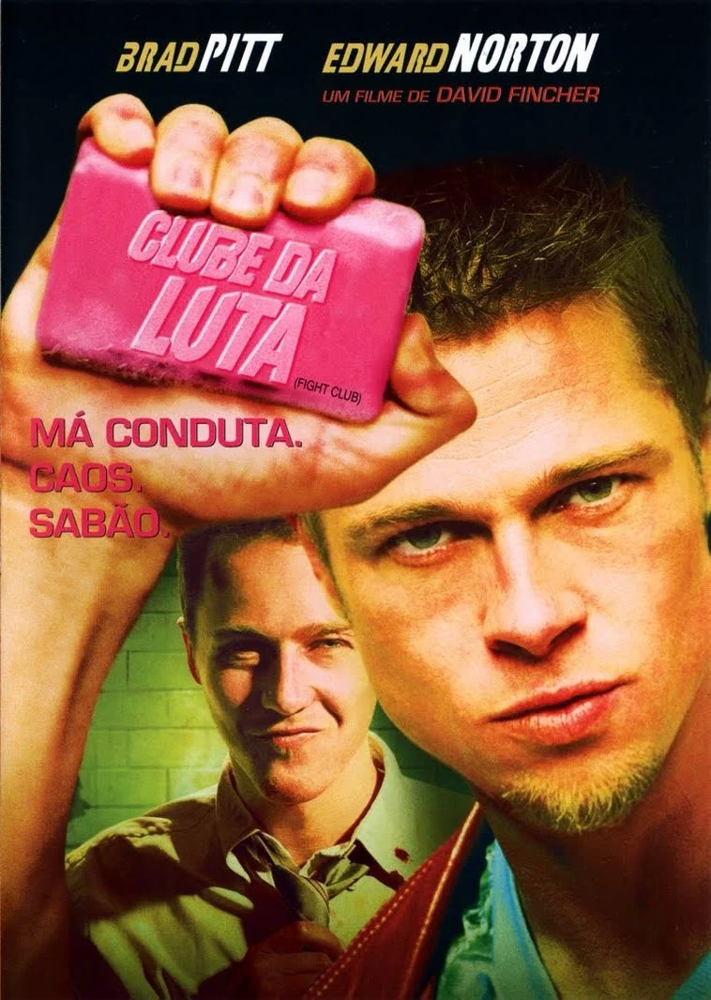
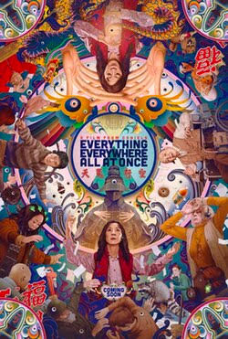
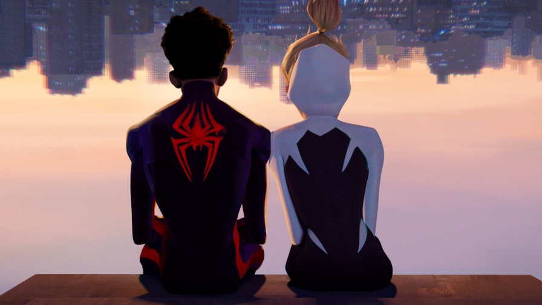
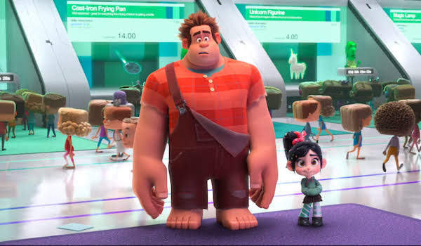

Review de Clube Da Luta

Por: Alex Prates
O filme retrata um jovem adulto tendo problemas com insônia, sua vida cotidiana e seu trabalho. Ele conhece um vendedor misterioso que mostra para si um modo de vida desapegado e longe de normas sociais. Juntos, eles formam um clube clandestino de luta que, inicialmente, serve como um espaço para extravasar angústias, mas acaba se tornando um grupo de anarquistas lutando contra o governo. Eu comecei achando que estava entendendo. Na metade, duvidei da minha capacidade cerebral. No final jurei que entendi a mensagem inteira: não seja consumista e lute em segredo contra o sistema. Agora que olho para trás, acho que nunca vou entender completamente. Mesmo fazendo parte dessa mesma sociedade criticada e não concordando com seus métodos brutais e desumanos, não sou capaz de ser completamente contra ele e lutar com garras e dentes contra suas realizações. Posso até ser o tipo de pessoa que faz discursos de duas horas contra o capitalismo e seus tentáculos que esmagam sonhos, mas no final do dia minha única vontade é deitar em minha cama cara demais, assistir minha série em uma TV grande demais e assistir vídeos curtos que acabam cada dia mais com minha atenção. Se você está lendo isso e julgando até minha alma, se pergunte quanta falta faria, de verdade, não ter um spotify premium e um smartphone no bolso 24/7.
Tenho cérebro para entender isso?

Por: Alex Prates
Tudo Ao Mesmo Lugar ao Mesmo Tempo é um filme sobre trauma geracional, amar seu filho independentemente da sua versão inventada e perfeita dele, as partes do seu ser que não mudam mesmo em ambientes diferentes e sobre aceitar as alegrias ínfimas da vida, porque a vida é feita delas. Eu consegui puxar essas informações centrais no meio de muita informação visual, muitas cenas de luta entre pessoas com armas não convencionais (como troféus de participação e muitos lápis) e um universo que aparece de maneira constante de pessoas com dedos de salsicha. Terminei o filme chorando tal qual um mendigo da França que foi pra cadeia por roubar um pedaço de pão. A forma como a depressão é retratada e a ânsia de orgulhar seus pais é constante me quebrou muito. Mesmo quando um feixe de esperança passa pela protagonista, o fim iminente de qualquer chance de felicidade volta e prova que nada nunca terminará bem. Mesmo não me considerando um pessimista total, me vi completamente desesperançoso e desejando que a protagonista me levantasse do chão tanto quanto ajudou sua filha.
Homem aranha através do aranhaverso não é sobre heróis

Por: Alex Prates
Em um mundo que parece odiar toda ação tomada pelo protagonista, Miles tenta desesperadamente carregar sua dupla identidade com todas as forças, o que está funcionando, só não tanto quanto era esperado. As coisas ainda conseguem piorar ao lembrar que todos os amigos que podiam entender ele e as dificuldades que ele está passando fazem parte de um clube secreto de homens aranha que ele, por algum motivo, não foi convidado. Enquanto ainda está tentando superar esse sentimento de traição por parte das únicas pessoas que ele achava que podia confiar, um ser interdimensional tenta matá-lo por um acidente enquanto ele salvava o multiverso e cria buracos no tempo e espaço para cumprir sua missão. Todos parecem contra sua presença a todo o tempo, mas sem explicações ou motivos, e na maior parte do tempo ele é tratado como uma criança que não sabe o que faz, mas quem é o verdadeiro culpado? O garoto de 15 anos que tenta salvar toda uma linha temporal complicada sozinho ou o chefe adulto de uma organização bem formada que o odeia por erros que foram jogados a ele?
Detona Ralph é pessoal

Eu entendo perfeitamente que não tem nada extremamente triste e dramático em uma animação da Disney, mas confia em mim quando eu disser que o lindo são as camadas. No filme acompanhamos um trabalhador mal compreendido e cansado de seu trabalho que sonha em ser reconhecido como seu colega de trabalho amado por todos. Para isso, ele busca ganhar uma medalha em um jogo qualquer de luta, e chegamos em uma das melhores partes do filme. Enquanto foge com seu big prêmio dos jogadores que realmente os mereciam, Ralph chega á um reino doce onde uma criança de uns 10 anos rouba sua medalha e o faz ensiná-la a dirigir para a tê-la de volta. No final, a amizade entre Ralph e a menina é suficiente para ele, sem necessidade de ter a medalha. Todos ao seu redor percebem como o tratavam mal e ele tem o reconhecimento desejado. O que me pega nesse filme é a similaridade entre esse gigante sem habilidades sociais e meu pai, que consegue ser mais grosso que um tubo de esgoto quando quer. Os dois passam por problemas para aprender a lidar com figuras mais jovens quando as mesmas brotam em sua vida, fazendo do filme muito reconfortante e pessoal para mim. Se você tem algo contra o Ralph, fala pra mim, por que ele não pode mais.
Parasita parasitou minha mente por 1 mês inteiro
Por: Alex Prates
Se tem um filme que te faz sentir um burguês safado e parte da pior classe dos trabalhadores ao mesmo tempo, esse filme é Parasita. A forma crua de representar a sociedade ao mesmo tempo que deixa diversos temas subentendidos por serem considerados assustadoramente normais me deixou chocado por quanto tempo era humanamente possível. Como eu imagino que muitas das pessoas que lerão esse post não terão assistido esse filme (que provavelmente está mofando na sua lista de desejos há um ano), tentarei ser tão breve quanto possível para mim. Uma família da Coreia do Sul, com uma condição de vida bem pobre, descobre uma nova forma de ganhar dinheiro: fingindo serem profissionais exemplares para serem contratados, um a um, por uma família rica que buscava inicialmente apenas um professor para sua filha mais velha. Com o passar do tempo, todos da casa começam a ajudar uns aos outros a boicotar os outro funcionários da família mais rica para substituí-los por membros já conhecidos. a minha maior dúvida quando assisti foi sobre o caráter das pessoas que enganaram a família de forma tão detalhada. Os meios justificam os fins? eu faria diferente se fosse eu passando fome? Isso foi um castigo divino ou apenas mais uma coincidência cruel do destino?